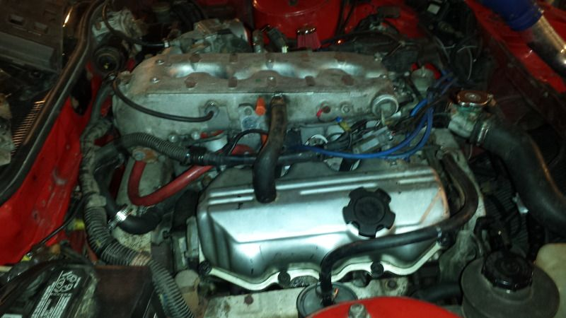
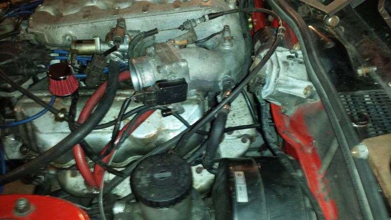
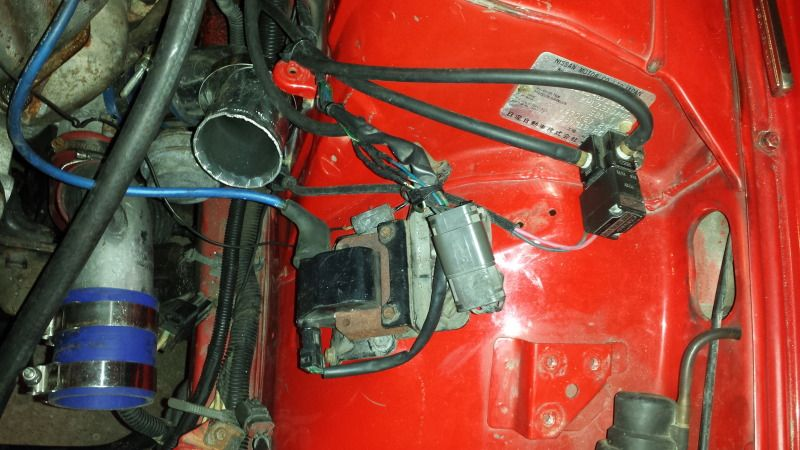
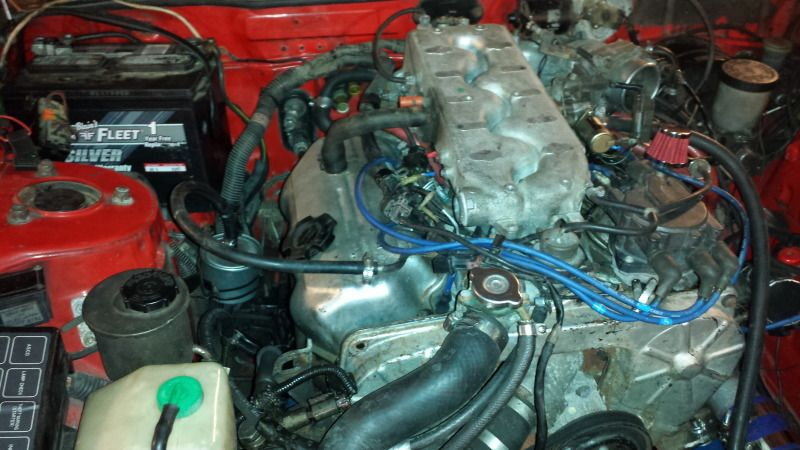
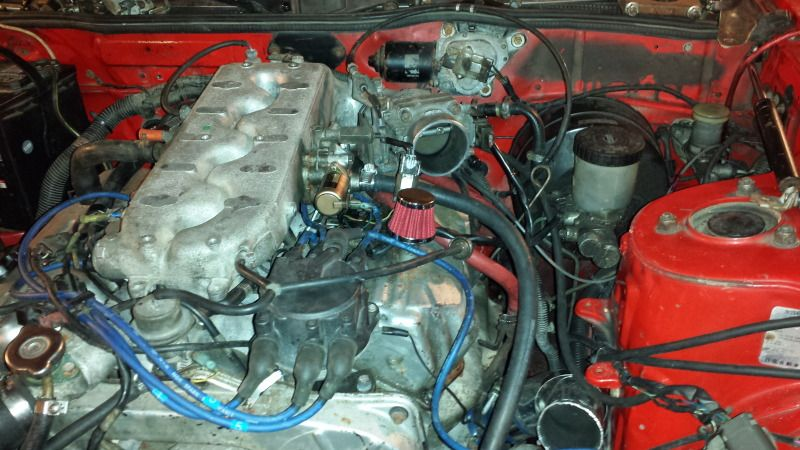
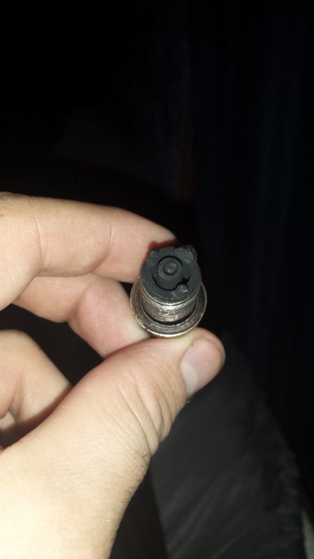
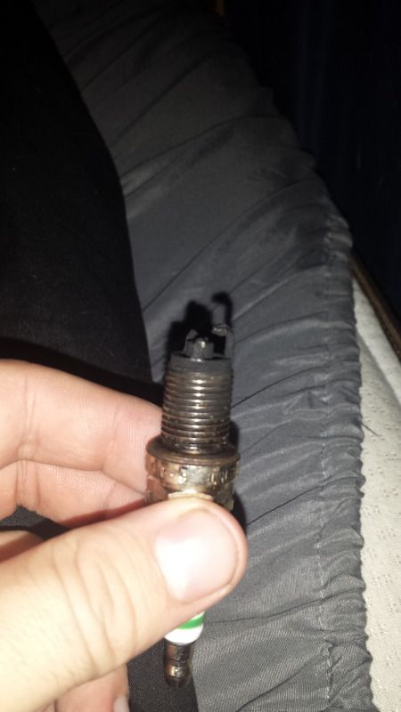

-
Hey guys, I known its been a long time coming since Ive posted and Ive been promising some pictures.... Anyways I havent done a build thread because its not quite done yet, but I swapped my Turbo motor and manual trans into a N/A Auto chasis. I sold my Nistune back when I wrecked my other Z, but I re-bought Nistune type 1 board, and the fellas at nistune pretuned it for the Benz 420cc injectors and the Z32 MAF and walbro 255. So what I need help with is this… I tested for spark, im getting spark, I tested for fuel, im definitely getting fuel… and she still wont start
and before anyone freaks and says search forums and check threads that already exist… I literally searched for hours on end, tried everything ive read, so please dont tell me I didnt do my homework because I did…
So… It tries to start, and I know FOR SURE that timing belt is 100% correct, but the ignition timing is where I am concerned, I set the motor to TDC for cylinder 1/6 pulled the distrbutor off, made sure the spindle was pointed at cylinder 1, lined up the two alignment marks and reinstalled the dizzy. It still wont start, but it tries.. Im going to pull off the cap again tomorrow and double check.
So basically the reason im posting, is because of the codes Im getting from the ECU. I have not hooked up a laptop to check NISTUNE, but regardless the codes should be the same between the ECU and NISTUNE. The codes im getting are as follows:
12-Air Flow Meter Circuit
14-Vehicle Speed Sensor
24-Neutral/Park Switch
31-Load Signal Circuit
41-Fuel Temperature Sensor Circuit
So my concerns are code 12, and code 41. Im running a z32 MAF and Nistune is adjusted accordingly to accept that MAF, So im concerned as to why this code is thrown. I had Nistune and the same MAF in my old Z and it never threw this code. So, any ideas, new MAF? and also, because Im using the z32 MAF, no wiring changes are needed, so that particular harness is NOT messed with/hacked up
Code 41- Maybe im looking in the wrong places, but Im having a hard time finding info on this particular issue. So If someone could either enlighten me or just point me in the general direction to info about the sensor and maybe how it would relate to a no-start issue. I know where this sensor is located i believe, directly below the distributor almost, but I never had an issue with it in the other car and nothing has change really. So any help would be greatly appreciated!!
Here are a few pics, intake piping is disconnected and IAC hose is sucking in Atmosphere air.




85 300zx turbo (front end damage)
86 300zx Swapped in ^ Turbo motor and AT2M Swap Completed

-
Try cranking the dizzy as far as it will go each time. If it fires up once maxed out you stabbed the dizzy wrong. As far as the code 12 that is strange, may want to make sure the maf circuit was modified. Code 41 is not important, for the fuel temp sensor located in the fuel pressure regulator.Hmmm, Whats next?
Full Size Bronco, smashing shit.
84ZXT -
Okay, will double check the Dizzy tonight, having a friends who's ford diesel tech come with me work to on it. If it keeps throwing MAF, then Im going to have to get a new MAF. I definitely know that Nistune was installed correctly, I did it myself and triple checked the installation before putting it in the car, and as far as the wiring to it goes, it is definitely not messed with because the wiring came from my old Z. But I will triple check the wiring and make sure that nothing is cut/pinched/etc.. Thanks for the reply, and I will repost tonight after trying the distributor as stated. Thanks againshromy;349483 wrote: Try cranking the dizzy as far as it will go each time. If it fires up once maxed out you stabbed the dizzy wrong. As far as the code 12 that is strange, may want to make sure the maf circuit was modified. Code 41 is not important, for the fuel temp sensor located in the fuel pressure regulator.85 300zx turbo (front end damage)
86 300zx Swapped in ^ Turbo motor and AT2M Swap Completed
-
Never used a Z32 maf but doesnt it require a diff plug or pins swapped?Hmmm, Whats next?
Full Size Bronco, smashing shit.
84ZXT -
z32 afm is the only one that shares the pinout and plug with a z31… one reason it's so attractive -
Okay guys, So We kinda of have it figured out. My friend came with me and we decided to retime the dizzy, it wasnt off by much, but some. That actually didnt fully fix it, after that we started pulling plugs, a few were fouled out but one was really bad. Cylinder 1 had detonated pretty badly because It blew apart the tip of the plug, ill post a pic at the end of this. Luckily i had an entire set of NGK plugs in my other VG that we swapped in. Went back in the car and turned the key and she tried to fire, but didnt quite do it. So just because, I had an extra ECU from an 85 N/A that we plugged in and what do ya know, she fired right up, and she surprisingly ran extremely well considering the z32 MAF, Benz injectors, and walbro fuel pump. So that narrows it down to the Nistune ECU that I thought I installed correctly, I think a connection may have been bridged during soldering, or possibly a broken track. I have to plug in the stock Chip that Nistune replaces and see if she runs correctly. So without further ado, here's the pic of the Spark Plug


I would still appreciate any advice/suggestions you guys might have! Thanks Again!85 300zx turbo (front end damage)
86 300zx Swapped in ^ Turbo motor and AT2M Swap Completed

Copyright © 2006–. All rights reserved. Privacy Policy